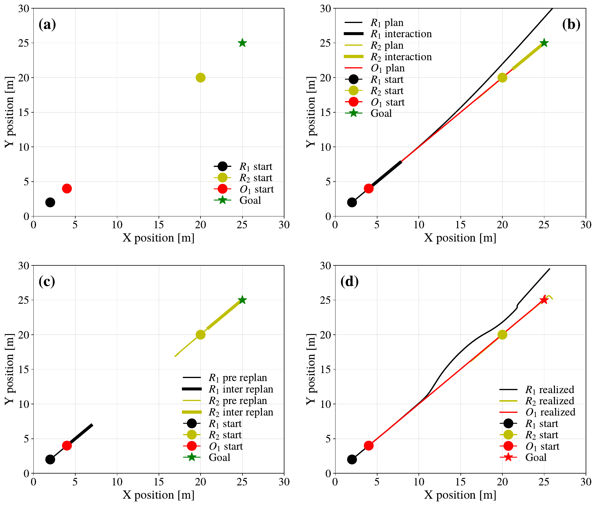
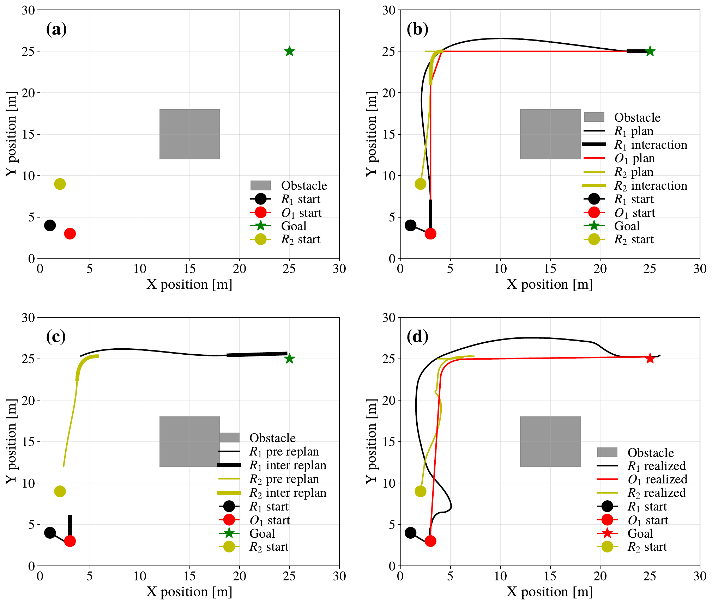
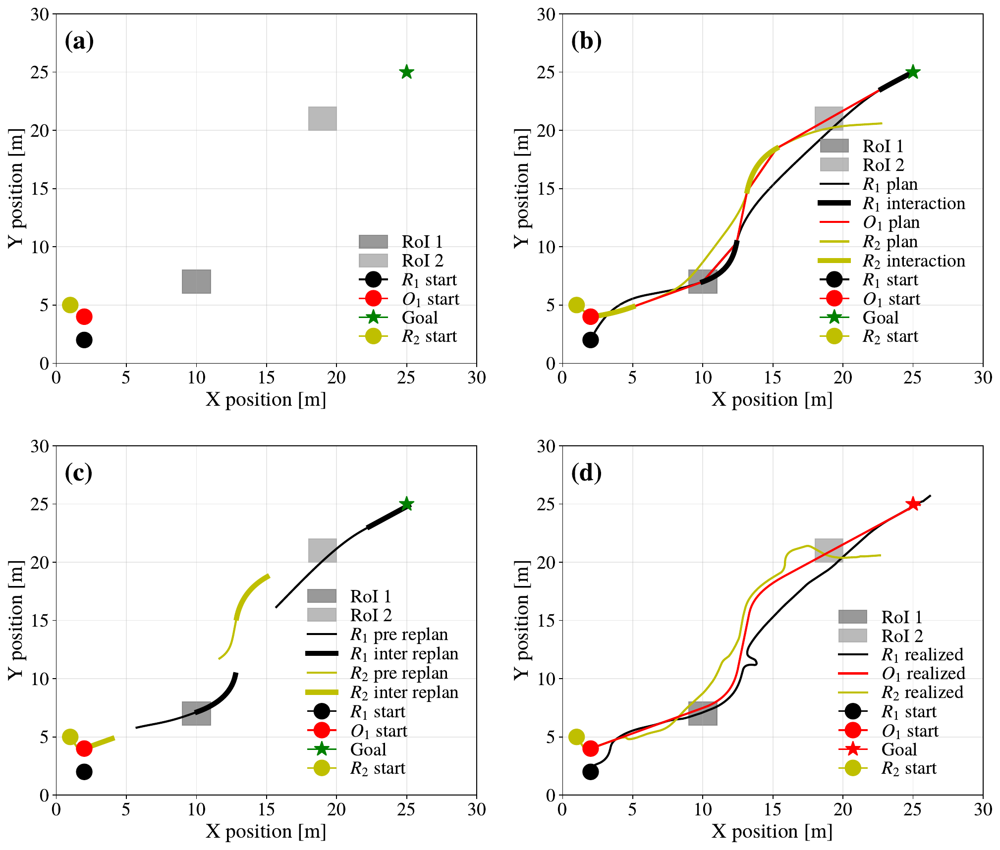
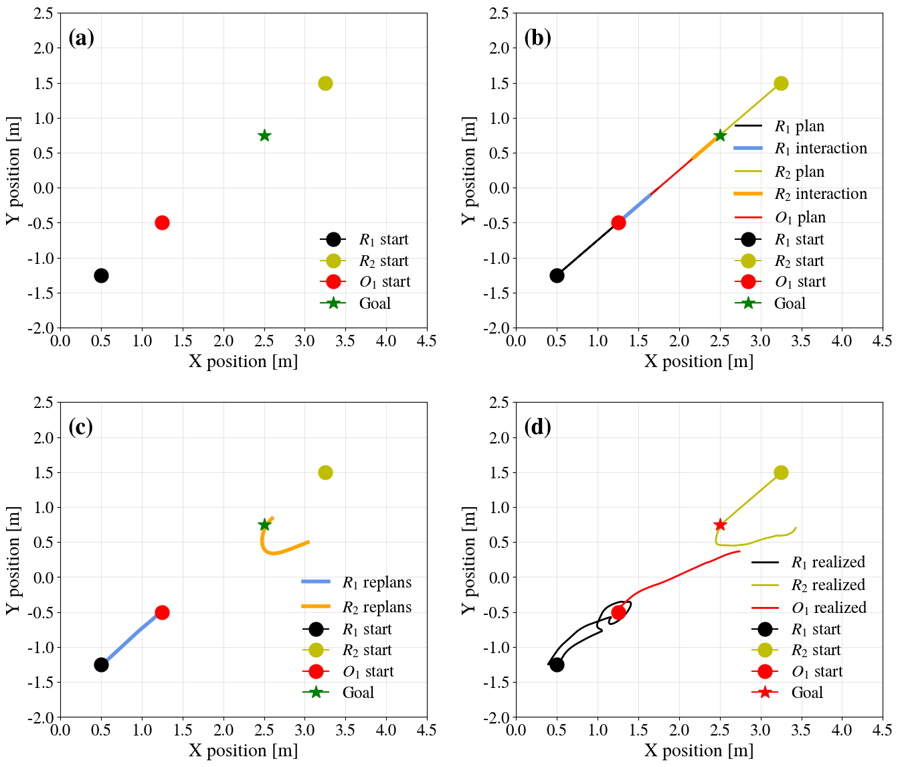

Abstract
Collaborative transport of passive objects in microgravity is a key capability for emerging space applications such as on-orbit servicing, debris removal, and in-space assembly. Traditional approaches largely rely on rigid connections or manipulators, in which the robot and object are mechanically coupled before transport commences. Such methods are typically costly and limited in scalability and reusability, as they require precise and often complex docking procedures prior to transport. More recently, impact-based approaches have been proposed to enable non-grasping collaborative transport, eliminating the need for rigid attachments.
This thesis presents a formal planning and control framework for compliant, non-grasping collaborative transport of a free-floating, non-cooperative object in microgravity. The proposed method replaces impulsive interactions with rendezvous-preceded, non-grasping contacts, enabling gentle momentum transfer while maintaining stability and safety. High-level task requirements and safety constraints are formally specified using Signal Temporal Logic and encoded into a Mixed-Integer Linear Programming problem.
The resulting framework follows a hierarchical structure consisting of a Mixed-Integer Linear Programming–based offline planner, an online re-planner that enforces geometric feasibility, and a Model Predictive Control layer for trajectory tracking and interaction execution. The approach is evaluated in a two-dimensional microgravity analogue environment using high-fidelity simulations of free-flying robots and objects.
The results indicate that rendezvous-based, compliant interactions enable collaborative, anchor-free transport with low interaction forces and adequate accuracy over short- to medium-duration planning horizons. Beyond demonstrating feasibility, the proposed framework provides a systematic way to formally specify, plan, and execute non-grasping interactions in two-dimensional microgravity analogue environments. This enables the synthesis of safe and reusable transport strategies, supporting future autonomous space operations.
Method
We base our method on the hierarchical planning and control framework presented in [1]. The framework consists of three layers: an offline MILP planner, an online geometric re-planner, and a low-level MPC controller. The offline MILP planner generates high-level plans that satisfy the STL specifications and constraints, reconciling when, where, and between whom interactions occur. The online re-planner ensures geometric feasibility during execution, and updates the offline generated plans using online measurements of robot and object states. The low-level MPC controller tracks the planned trajectories and executes the rendezvous-based interactions, modeling the interaction forces necessary to track both robot and object trajectories.
Basic Transportation
Shown in Figure 1(a) is the setup for scenario 1. The transportation tasks involves robots $R_1$ and $R_2$ transporting the object $O_1$ from its starting position to the goal. This scenario excludes any obstacles or \glspl{RoI}, as such no STL formulas are used. The total allotted time for the task is $T = 65$ seconds and the initial conditions are as follows: $R_1(0) = [2,2]$, $R_2(0) = [20,20]$, $O_1(0) = [4,4]$. The goal of the task is $O_1(T) = [25,25]$.

Figure 1. (a) Setup for scenario 1. (b) The original plans produced by the MILP. (c) The re-planned trajectories of robots during task execution. (d) The final realized trajectories of all robots and objects
Simulation recording of Scenario 1
Transportation & Obstacle Avoidance
To evaluate the performance of the proposed method on non-linear trajectories, Scenario 3 is designed and simulated with an obstacle located between the initial and goal positions of the object. This scenario is intended to assess the method's ability to operate in environments with obstacles and hazards, particularly when interactions induce changes in the object's direction rather than simple acceleration or deceleration along a straight line. The initial conditions for the robots and the object in Scenario 3 are given by $R_1(0) = [1,4]$, $R_2(0) = [2,9]$, and $O_1(0) = [3,3]$. The corresponding setup is shown in Figure 2(a), with a task horizon of $T = 90$. The objective of the task is for the object to reach the final goal position $O_1(T) = [25,25]$, while ensuring obstacle avoidance for all systems throughout the execution:
$$\varphi = \bigwedge_{S_i\in\mathcal{S}} \mathbf{G}_{[0,T]}(p_{S_i} \in \mathcal{W}_{\text{free}})$$

Figure 2. (a) Setup for scenario 3. (b) The original plans produced by the MILP. (c) The re-planned trajectories of robots during task execution. (d) The final realized trajectories of all robots and objects
Simulation recording of Scenario 3
Transportation with Waypoint Regions
The final scenario evaluates the performance of the proposed method in the presence of intermediary goals during transport, which also serves to assess its behavior under a more complex STL specification. Figure 3(a) illustrates the setup for scenario 4. The initial conditions are $R_1(0) = [2,2]$, $R_2(0) = [1,5]$, and $O_1(0) = [2,4]$. The task is to transport $O_1$ to the goal position at $T=122$, $O_1(T) = [25,25]$, while visiting two regions of interest, $RoI_1 = [10,7]$ and $RoI_2 = [19,21]$, each defined as a square of side length 2. The specification is given by
$$\varphi = \mathbf{F}_{[0,60]}(p_{O_1} \in RoI_1) \wedge \mathbf{F}_{[80,T]}(p_{O_1} \in RoI_2)$$

Figure 3. (a) Setup for scenario 4. (b) The original plans produced by the MILP. (c) The re-planned trajectories of robots during task execution. (d) The final realized trajectories of all robots and objects
Simulation recording of Scanrio 4
Experimental Hardware Validation
The experiment consists of a basic transportation task equivalent to Scenario 1, scaled to fit the constraints of the ATMOS platform. Two robots, $R_1$ and $R_2$, are tasked with transporting a single object $O_1$ from its initial position to the target location $O_1(T) = [2.5,\,0.75]$. The experimental setup is illustrated in Figure 4(a), with initial conditions $R_1(0) = [0.5,\,-1.25]$, $R_2(0) = [3.25,\,1.5]$, $O_1(0) = [1.25,\,-0.5]$, and a total task duration of $T = 32$.

Figure 4. (a) Setup for experiment. (b) The original plans produced by the MILP. (c) The re-planned trajectories of robots during task execution. (d) The final realized trajectories of all robots and objects
Recording of experiment. Thick blue lines indicate re-planned trajectories. This is the most successful run, where both robots re-planned properly and executed rendezvous before the interaction. Note the object's wobbling during rendezvous with Robot 1, caused by the robots' thrusters. The Velocity Keeping MPC actively counteracts these disturbances.
Recording of experiment. Thick blue lines indicate re-planned trajectories. This shows a typical run where Robot 1 replans only once before the interaction. Due to noise and inadequate time/space for correction, the rendezvous is unsatisfactory. The robot "bumps" into the object before the interaction starts. However, the active "Velocity Keeping" MPC on the object minimizes the impact.
References
- J. Verhagen and J. Tumova, “Collaborative object transportation in space via impact interactions,” 2025, Publisher: arXiv Version Number: 1. DOI: 10.48550/ARXIV.2504.18667. [Online]. Available: https://arxiv.org/abs/2504.18667.
BibTeX
@article{YourPaperKey2024,
title={Compliant, Non-Grasping Collaborative Transport of Free-Floating Objects in Microgravity},
author={Arian Kourangi,
journal={Conference/Journal Name},
year={2026}
}